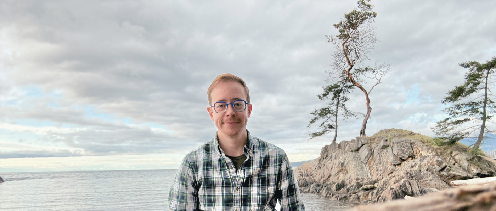

Adult Literacy
Authored six widely-adopted adult literacy textbooks - work recognized with a BC Campus Award for Excellence in Open Education.



I'm an adult educator and curriculum designer based in Vancouver, BC. I build low-barrier pathways that help adults return to education with confidence - especially those who've been historically excluded or underserved by traditional systems.